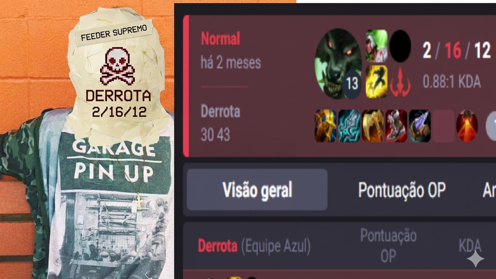

Sobre o projeto
O site Itens do LoL foi criado como um projeto acadêmico com o objetivo de facilitar o entendimento dos itens do League of Legends para jogadores iniciantes.
Muitas vezes novos jogadores têm dificuldade em entender quais itens comprar e quando utilizá-los. Este projeto busca simplificar essas informações de forma clara e direta.
O que pode gerar situações engraçadas, como o famoso jungle diff. Como exemplo na imagem abaixo.

Essa é uma imagem de um dos nossos jogadores, antes de participar das aulas de coaching. Ele estava jogando com seu melhor boneco, e como podem ver, a diferença de nivel é enorme.
Infelizmente tivemos que borar a imagem para evitar problemas de constrangimento a um de nossos jogadores. Mas a essência do diff ainda é a mesma a jungle continua viva.